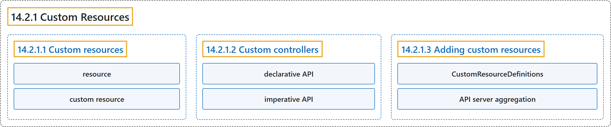

14.2.1 Custom Resources
Classification

Glossary
| Term | Definition | 中文翻译 | Source |
|---|---|---|---|
| 14.2.1 Custom Resources 自定义资源 |
"Custom resources are instances of resource types added to Kubernetes through API extensions." | 自定义资源 是资源类型的实例，这些类型通过 API 扩展添加到 Kubernetes。 | The Kubernetes Authors, n.d., "Custom Resources", para. 1 |
| 14.2.1.1 Custom resources 自定义资源 |
(No definition) | （无定义） | The Kubernetes Authors, n.d., "Custom resources" |
| resource 资源 |
"A resource is an endpoint in the Kubernetes API that stores a collection of API objects of a certain kind" | 资源 是 Kubernetes API 中的一个端点，它存储某种类型的一组 API 对象 | The Kubernetes Authors, n.d., "Custom resources", para. 1 |
| custom resource 自定义资源 |
"A custom resource is an extension of the Kubernetes API that is not necessarily available in a default Kubernetes installation." | 自定义资源 是 Kubernetes API 的一种扩展，在默认安装的 Kubernetes 中不一定可用。 | The Kubernetes Authors, n.d., "Custom resources", para. 2 |
| 14.2.1.2 Custom controllers 自定义控制器 |
"On their own, custom resources let you store and retrieve structured data." | 单独使用时，自定义资源让你存储和检索结构化数据。 | The Kubernetes Authors, n.d., "Custom controllers", para. 1 |
| declarative API 声明式 API |
"When you combine a custom resource with a custom controller, custom resources provide a true declarative API." | 把自定义资源与自定义控制器 结合起来，自定义资源就提供了真正的声明式 API。 | The Kubernetes Authors, n.d., "Custom controllers", para. 1 |
| imperative API 命令式 API |
(context) "This is in contrast to an imperative API, where you instruct a server what to do." | （语境）这与命令式 API 相反，后者由你 指示服务器做什么。 | The Kubernetes Authors, n.d., "Custom controllers", para. 2 |
| 14.2.1.3 Adding custom resources 添加自定义资源 |
"Kubernetes provides two ways to add custom resources to your cluster:" | Kubernetes 提供两种方式来向集群添加自定义资源： | The Kubernetes Authors, n.d., "Adding custom resources", para. 1 |
| CustomResourceDefinitions CustomResourceDefinition |
"The CustomResourceDefinition API resource allows you to define custom resources." | CustomResourceDefinition API 资源让你定义自定义资源。 | The Kubernetes Authors, n.d., "CustomResourceDefinitions", para. 1 |
| API server aggregation API 服务器聚合 |
(context) "Usually, each resource in the Kubernetes API requires code that handles REST requests and manages persistent storage of objects." | （语境）通常，Kubernetes API 中的每种资源都需要能处理 REST 请求并管理对象持久存储的代码。 | The Kubernetes Authors, n.d., "API server aggregation", para. 1 |
References
The Kubernetes Authors. (n.d.). Custom Resources. Kubernetes Documentation. Retrieved October 31, 2026, from https://kubernetes.io/docs/concepts/extend-kubernetes/api-extension/custom-resources/